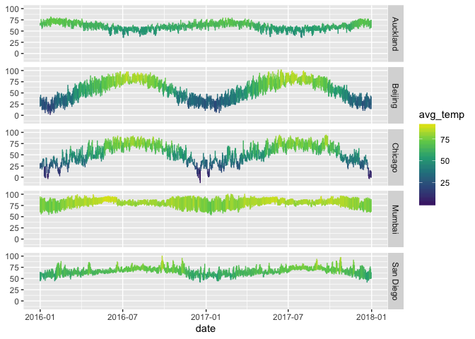

mosaicData provides a number of data sets associated with Proejct MOSAiC.
You can install the released version of mosaicData from CRAN with:
install.packages("mosaicData")And the development version from GitHub with:
# install.packages("devtools")
devtools::install_github("ProjectMOSAIC/mosaicData")This is a basic example which shows you how to solve a common problem:
library(mosaicData)
suppressPackageStartupMessages(library(ggformula))
head(Weather)
#> # A tibble: 6 x 25
#> city date year month day high_temp avg_temp low_temp high_dewpt
#> <chr> <date> <dbl> <int> <dbl> <dbl> <dbl> <dbl> <dbl>
#> 1 Auck… 2016-01-01 2016 1 1 68 65 62 64
#> 2 Auck… 2016-01-02 2016 1 2 68 66 64 64
#> 3 Auck… 2016-01-03 2016 1 3 77 72 66 70
#> 4 Auck… 2016-01-04 2016 1 4 73 66 60 66
#> 5 Auck… 2016-01-05 2016 1 5 69 62 55 55
#> 6 Auck… 2016-01-06 2016 1 6 69 63 57 54
#> # … with 16 more variables: avg_dewpt <dbl>, low_dewpt <dbl>,
#> # high_humidity <dbl>, avg_humidity <dbl>, low_humidity <dbl>,
#> # high_hg <dbl>, avg_hg <dbl>, low_hg <dbl>, high_vis <dbl>,
#> # avg_vis <dbl>, low_vis <dbl>, high_wind <dbl>, avg_wind <dbl>,
#> # low_wind <dbl>, precip <chr>, events <chr>
gf_linerange(high_temp + low_temp ~ date | city ~ ., color = ~avg_temp, data = Weather) %>%
gf_refine(scale_color_viridis_c(option = "D", end = 0.95, begin = 0.1))